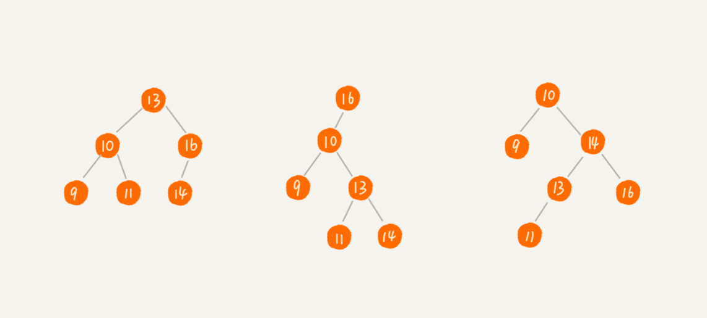
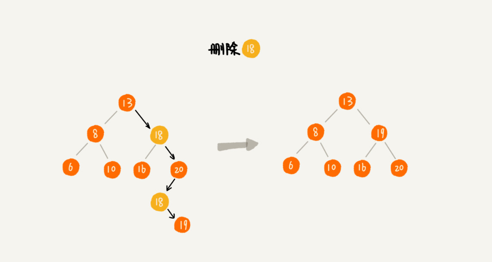

二叉树基础（下）
有了如此高效的散列表，为什么还需要二叉树？
查找不光是查找某一个值，还会查找一个特定的范围，这在散列表里面就不一定适用了。类似B+树之类的，只在叶子节点保存数据，并且将其用链表连起来。散列表在扩缩容的时候，性能不大稳定，同时由于散列冲突的存在，虽然散列表的时间复杂度是常数级别的，但实际应用中，由于其不稳定，性能也不一定会比平衡二叉搜索树好。
二叉查找树
支持快速查找一个数据，还支持快速插入、删除一个数据。
结构特点
二叉查找树要求，在树中的任意一个节点，其左子树中的每个节点的值，都要小于这个节点的值，而右子树节点的值都大于这个节点的值。

示例树：
1 | |
二叉查找树的查找操作
我们先取根节点，如果它等于我们要查找的数据，那就返回。如果要查找的数据比根节点的值小，那就在左子树中递归查找；如果要查找的数据比根节点的值大，那就在右子树中递归查找。
代码实现
1 | |
二叉查找树的插入操作
如果要插入的数据比节点的数据大，并且节点的右子树为空，就将新数据直接插到右子节点的位置；如果不为空，就再递归遍历右子树，查找插入位置。同理，如果要插入的数据比节点数值小，并且节点的左子树为空，就将新数据插入到左子节点的位置；如果不为空，就再递归遍历左子树，查找插入位置。
1 | |
二叉查找树的删除操作

1 | |
实际上，关于二叉查找树的删除操作，还有个非常简单、取巧的方法，就是单纯将要删除的节点标记为“已删除”，但是并不真正从树中将这个节点去掉。这样原本删除的节点还需要存储在内存中，比较浪费内存空间，但是删除操作就变得简单了很多。而且，这种处理方法也并没有增加插入、查找操作代码实现的难度。
二叉查找树的其他操作
还可以支持快速地查找最大节点和最小节点、前驱节点和后继节点。
一个重要的特性，就是中序遍历二叉查找树，可以输出有序的数据序列，时间复杂度是 O(n)，非常高效。因此，二叉查找树也叫作二叉排序树。
支持重复数据的二叉查找树
第一种方法比较容易。
二叉查找树中每一个节点不仅会存储一个数据，因此我们通过链表和支持动态扩容的数组等数据结构，把值相同的数据都存储在同一个节点上。
第二种方法比较不好理解，不过更加优雅。
每个节点仍然只存储一个数据。在查找插入位置的过程中，如果碰到一个节点的值，与要插入数据的值相同，我们就将这个要插入的数据放到这个节点的右子树，也就是说，把这个新插入的数据当作大于这个节点的值来处理。

当要查找数据的时候，遇到值相同的节点，我们并不停止查找操作，而是继续在右子树中查找，直到遇到叶子节点，才停止。这样就可以把键值等于要查找值的所有节点都找出来。
对于删除操作，我们也需要先查找到每个要删除的节点，然后再按前面讲的删除操作的方法，依次删除。

二叉查找树的时间复杂度分析

时间复杂度其实都跟树的高度成正比，也就是 O(height)。
如何求一棵包含 n 个节点的完全二叉树的高度？
由图中可得，包含n个节点的完全二叉树种，第K层的节点个数为2^(k-1)
借助等比数列的求和公式，我们可以计算出，L 的范围是[log2(n+1), log2n +1]。完全二叉树的层数小于等于 log2n +1，也就是说，完全二叉树的高度小于等于 log2n。
相对散列表，为什么要用二叉查找树呢？
第一，散列表中的数据是无序存储的，如果要输出有序的数据，需要先进行排序。而对于二叉查找树来说，我们只需要中序遍历，就可以在 O(n) 的时间复杂度内，输出有序的数据序列。
第二，散列表扩容耗时很多，而且当遇到散列冲突时，性能不稳定，尽管二叉查找树的性能不稳定，但是在工程中，我们最常用的平衡二叉查找树的性能非常稳定，时间复杂度稳定在 O(logn)。
第三，笼统地来说，尽管散列表的查找等操作的时间复杂度是常量级的，但因为哈希冲突的存在，这个常量不一定比 logn 小，所以实际的查找速度可能不一定比 O(logn) 快。加上哈希函数的耗时，也不一定就比平衡二叉查找树的效率高。
第四，散列表的构造比二叉查找树要复杂，需要考虑的东西很多。比如散列函数的设计、冲突解决办法、扩容、缩容等。平衡二叉查找树只需要考虑平衡性这一个问题，而且这个问题的解决方案比较成熟、固定。
最后，为了避免过多的散列冲突，散列表装载因子不能太大，特别是基于开放寻址法解决冲突的散列表，不然会浪费一定的存储空间。
思考
求一棵给定二叉树的确切高度？
使用递归，遍历左子树和右子树，根节点高度=max(左子树高度，右子树高度) + 1
本博客所有文章除特别声明外，均采用 CC BY-SA 4.0 协议 ，转载请注明出处！